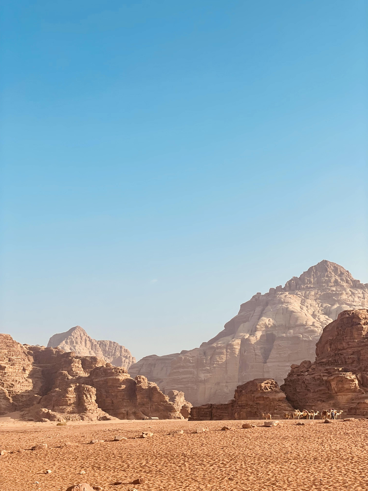
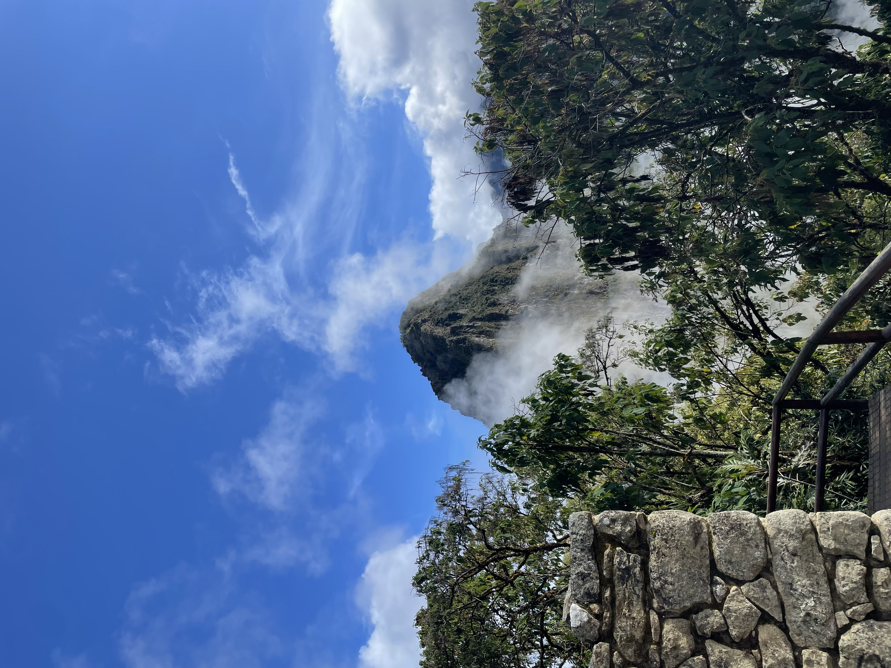

About me
This is a website about me.
I share some of the works I have done in my life, let them be school related, personal, or professional. I might also include pictures I took during trips, quotes I found interesting, musical sounds I heard or played, animals, people, or anything I think is beautiful, interesting, or knowledge-enhancing.
Typical topics I could share about:
- Philosophy
- Physics
- Engineering
- Neuroscience
- Nature
- Music
- Health
- Cooking
I am still learning about everything. I want to be curious and learn new things all my life, keeping the search for truth and beauty because i believe they exist and make a better life for me and humanity.

